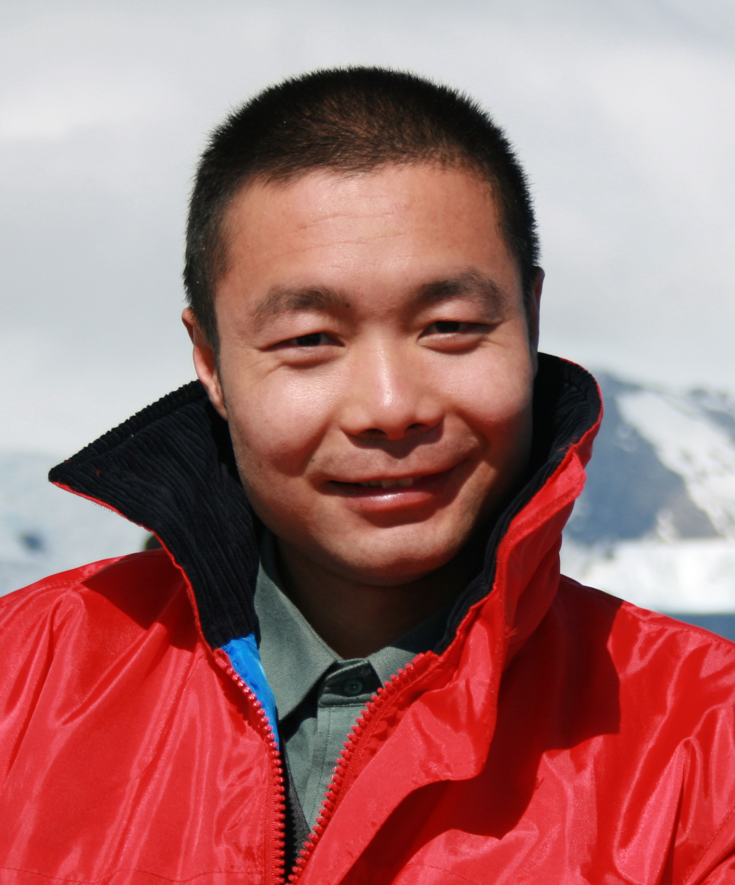

|  | Kai YuProfessor X-LANCE Lab Department of Computer Science and Engineering Shanghai Jiao Tong University Email: kai.yu [AT] sjtu [DOT] edu [DOT] cn Address: 800 Dongchuan Road, Shanghai 200240, China [中文]|[English] |
I am currently a distinguished professor and PhD supervisor in the Department of Computer Science and Engineering at Shanghai Jiao Tong University, as well as the co-founder and chief scientist of Mobvoi. I am honored to be recognized as a leading talent in technological innovation under the national "Ten Thousand Talent Program", have received support from the National Natural Science Foundation of China's Excellent Young Scientists Fund (Outstanding Youth), and hold the title of "Eastern Scholar" Distinguished Professor in Shanghai. My academic journey began in the Department of Automation at Tsinghua University, where I completed my bachelor's and master's degrees, before pursuing my PhD at the Department of Engineering, University of Cambridge, UK.
My research interests are primarily in the field of artificial intelligence, especially in intelligent speech and language processing, human-computer interaction, pattern recognition, and machine learning. I have achieved a series of internationally advanced research results in speech recognition and synthesis, natural language understanding, spoken dialogue systems, and cognitive human-computer interaction. These achievements have been recognized in academia and successfully industrialized.
I have published over 200 papers at top-tier conferences and journals, and have won best paper awards from leading journals such as Computer Speech and Language, Speech Communication, as well as excellent paper awards from top international conferences like InterSpeech. I have also won championships in a series of international evaluations in the fields of speech recognition and dialogue systems.
As a senior member of the Institute of Electrical and Electronics Engineers (IEEE), I am the first scholar from mainland China's universities to be elected to the IEEE Speech and Language Processing Technical Committee (2017-2019). I also serve as the associate editor for the IEEE Transactions on Audio Speech and Language Processing and have chaired program committees for international conferences such as InterSpeech, as well as serving as a research area chair for conferences like ACL and EMNLP. My work not only reflects my passion for the field of artificial intelligence but also demonstrates my contributions to advancing scientific research and technological progress in this field.
NLP SciEval: A Multi-Level Large Language Model Evaluation Benchmark for Scientific Research
Liangtai Sun, Yang Han, Zihan Zhao, Da Ma, Zhennan Shen, Baocai Chen, Lu Chen, Kai Yu
AAAI 2024
[Paper][Website]
Dialogue 任务型人机对话系统中的认知技术--概念、进展及其未来
俞凯, 陈露, 陈博, 孙锴, 朱苏
计算机学报 2015
[Paper]
Action Editor/Area Chair
Programme Committee Member
Journal Reviewer